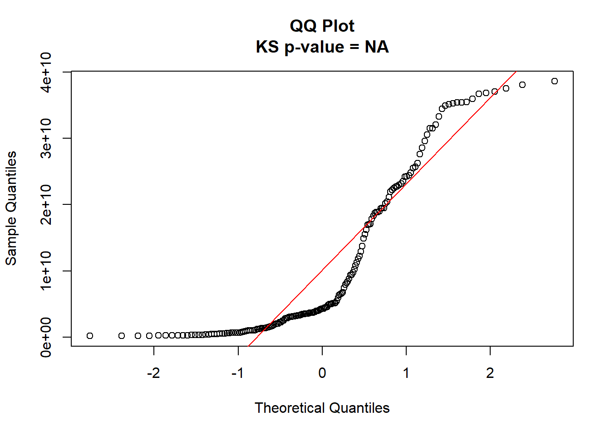
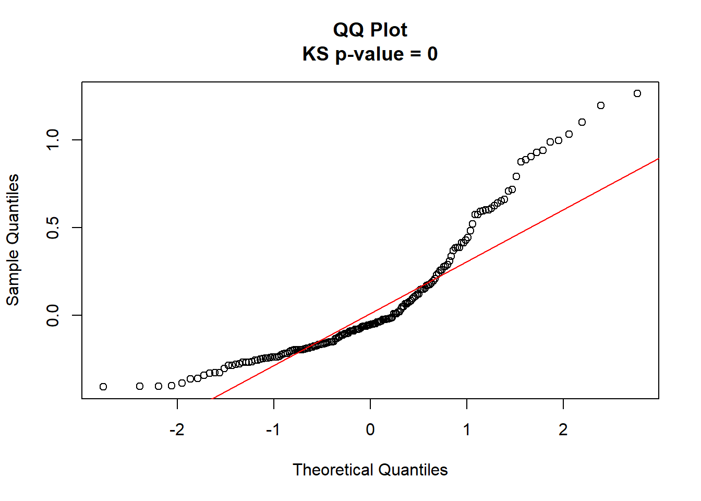
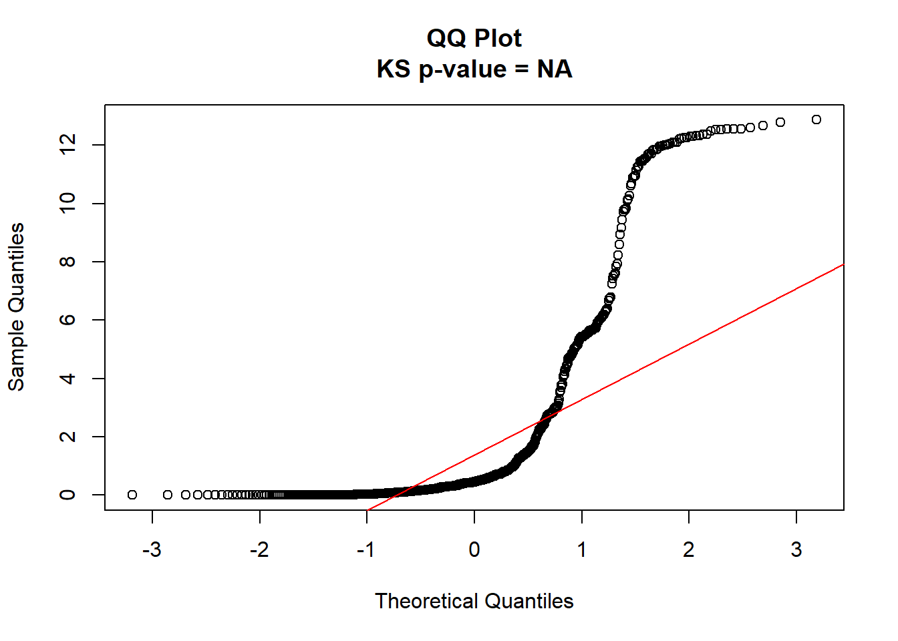
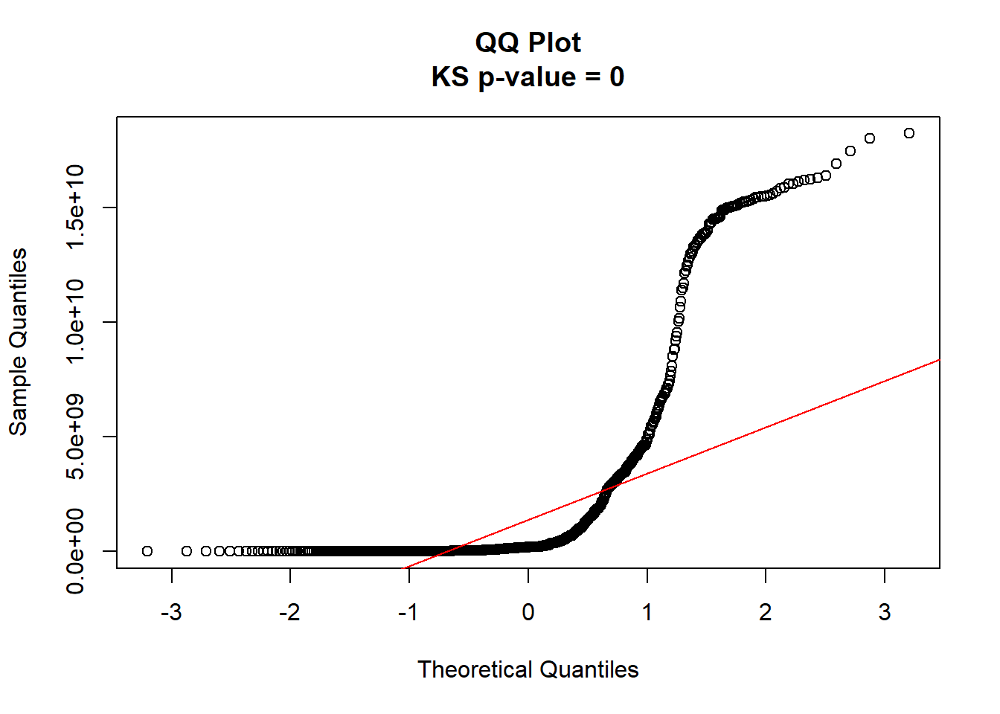
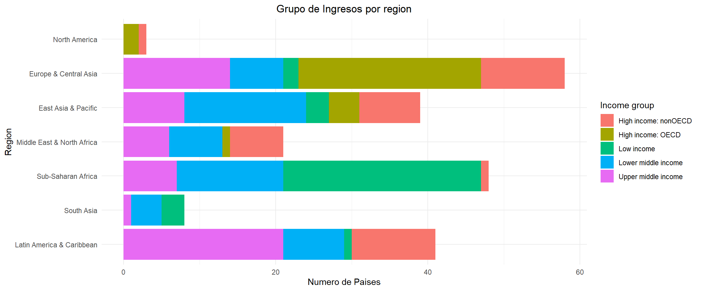
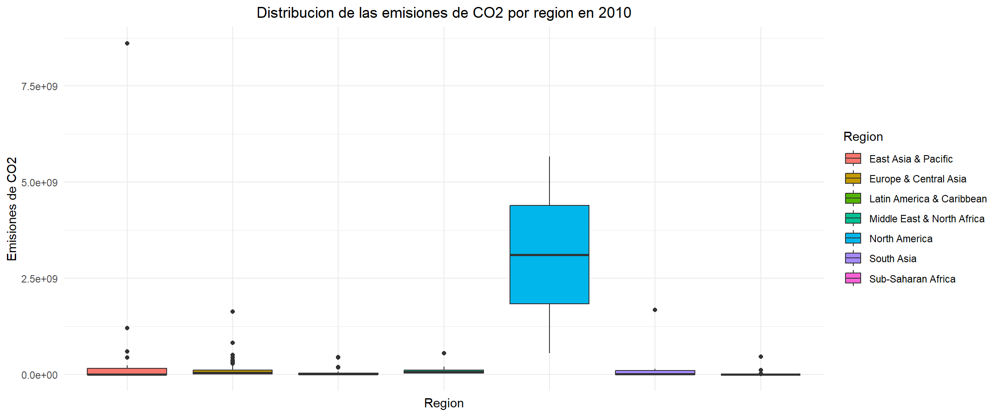
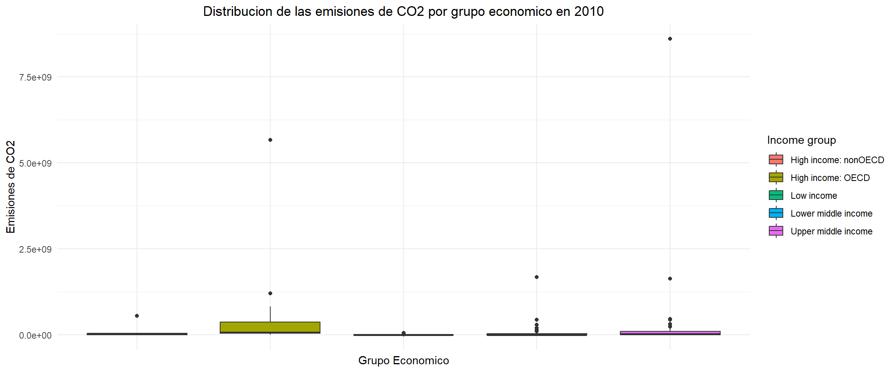
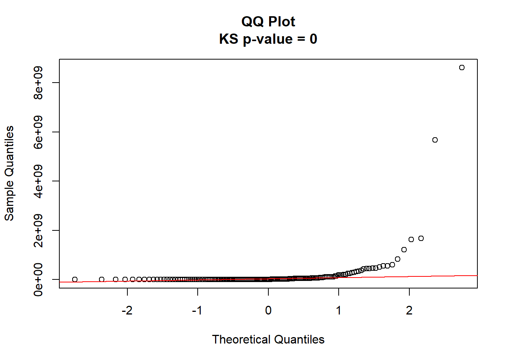

Análisis y Resultados
Relación histórica entre emisiones de CO2 y aumento de la temperatura promedio global.
A continuación, se presenta una gráfica 1 con el comportamiento histórico de las emisiones totales de CO2 a través de los años. Adicionalmente, se incluye en el mismo gráfico el comportamiento anual de la temperatura anómala durante el mismo periodo de tiempo. El análisis de la gráfica revela una clara correlación positiva y estrecha entre las emisiones totales de CO2 y el incremento de la temperatura global, mostrando trayectorias que aparecen prácticamente superpuestas a lo largo del registro histórico.
Se observa un patrón de crecimiento acelerado en ambas variables durante los últimos cincuenta años, periodo en el cual han aumentado rápidamente sin alcanzar aún su pico máximo. Esta tendencia ascendente ha impulsado la temperatura media global hasta alcanzar anomalías de aproximadamente 1.3°C en comparación con los niveles preindustriales.
Diferencias resaltables entre ambas curvas pueden ser que mientras que la curva de emisiones totales presenta un comportamiento sostenido y suave, la temperatura manifiesta una mayor variabilidad natural año tras año, aunque sigue fielmente la tendencia de crecimiento exponencial.
En la figura 2, se puede visualizar directamente la correlación entre ambas variables. Se evidencia una clara relación lineal positiva que complementa lo prensentado en la primera gráfica.
world_co2 <- emissions_data %>% filter(Code == "OWID_WRL")
world_per_capita <- emissions_per_capita_data %>% filter(Code == "OWID_WRL")
yearly_data <- yearly_average %>%
left_join(world_co2, by = c("year" = "Year")) %>%
select(-Entity, - Code) %>%
left_join(world_per_capita, by = c("year" = "Year")) %>%
select(-Entity, - Code)
colnames(yearly_data) <- c("year", "mean_temperature_anomaly", "CO2_emissions", "CO2 per capita")
scale_factor <- max(yearly_data$CO2_emissions, na.rm = TRUE) / max(yearly_data$mean_temperature_anomaly, na.rm = TRUE)ggplot(yearly_data, aes(x = year)) +
geom_point(aes(y = CO2_emissions, color = "Emisiones de CO~2~ (Toneladas)")) +
geom_point(aes(y = mean_temperature_anomaly * scale_factor, color = "Temperatura Anomala (°C)")) +
scale_y_continuous(
name = "CO2 Emissions (Tonnes)",
sec.axis = sec_axis(~ . / scale_factor, name = "Temperatura Anomala (°C)")
) +
labs( x = "Year", color = "Variable", title = "Temperatura y emisiones históricas") +
theme_minimal()+
theme(plot.title = element_text(hjust = 0.5))
Figure 1: Comportamiento anual de la Emisión total de CO2 y Temperatura Anómala
ggplot(yearly_data, aes(x = CO2_emissions, y = mean_temperature_anomaly)) +
geom_point() +
geom_smooth(method = "lm", se = FALSE) +
labs(
x = "Emisiones de CO2 (Toneladas)",
y = "Temperatura Anomala",
title = "CO2 vs Temperatura Anomala"
) +
theme_minimal()+
theme(plot.title = element_text(hjust = 0.5))
Figure 2: Gráfico de Dispersión de la Emisión Total de CO2 vs Temperatura Anómala
Prueba de hipótesis
Validamos nuestras conclusiones con una prueba de correlación. Para este fin, primero analizamos el supuesto de normalidad sobre las variables de emisión de CO2 y temperatura anomála media.
- Validación supuesto de normalidad
Realizando las pruebas de normalidad, encontramos que ninguna de las variables de intéres cumplen con este supuesto, ambos con p-valores cercanos a 0 y con qq-plots (3 y 4) muy distintos a lo que cabría de esperar en un comportamiento normal. Debido a esto, realizamos una prueba de correlación de Spearman para validar la correlación entre ambas variables.
ks_result <- ks.test(
yearly_data$CO2_emissions,
"pnorm",
mean = mean(yearly_data$CO2_emissions),
sd = sd(yearly_data$CO2_emissions)
)
qqnorm(yearly_data$CO2_emissions,
main = paste(
"QQ Plot\nKS p-value =",
round(ks_result$p.value, 4)
))
qqline(yearly_data$CO2_emissions, col="red")
Figure 3: QQ-plot para validación de normalidad - Emisiones de CO2
ks_result <- ks.test(
yearly_data$mean_temperature_anomaly,
"pnorm",
mean = mean(yearly_data$mean_temperature_anomaly),
sd = sd(yearly_data$mean_temperature_anomaly)
)
qqnorm(yearly_data$mean_temperature_anomaly,
main = paste(
"QQ Plot\nKS p-value =",
round(ks_result$p.value, 4)
))
qqline(yearly_data$mean_temperature_anomaly, col="red")
Figure 4: QQ-plot para validación de normalidad - Temperatura media anomála
- Prueba de Correlación de Spearman
Planteamos la siguiente prueba de correlación de Spearman, mediante la validación de las hipótesis:
\(H_0\): coeficiente de correlación es igual a 0.
\(H_1\): coeficiente de correlación es distinto a 0.
res <- cor.test(yearly_data$CO2_emissions, yearly_data$mean_temperature_anomaly, method = "spearman")
tabla_res <- data.frame(
Metodo = res$method,
Correlacion = round(res$estimate, 4),
p_value = round(res$p.value, 4),
Estadistico = round(res$statistic, 4)
)
kable(tabla_res)| Metodo | Correlacion | p_value | Estadistico | |
|---|---|---|---|---|
| rho | Spearman’s rank correlation rho | 0.7941 | 0 | 183869.6 |
Con nuestra prueba de Spearman, encontramos un resultado significativo, con p-value mucho menor 0.05 (p-value = 0). El valor de correlación encontrado es de 0.79, indicio de una alta correlación entre ambas variables. Esto va en línea con nuestras conclusiones tras el análisis gráfico de ambas variables.
Emisiones de CO2 y el desarrollo ecónomico.
Tras establecer la relación entre las emisiones y el incremento en la temperatura anomala, nuestro análisis continua con la busqueda de una relación entre el desempeño económico de un país y los niveles de emisiones de CO2 que este genera. El análisis histórico revela diferencias estructurales entre grupos de ingreso 5:
- Los países de altos ingresos presentan un crecimiento temprano y acelerado de emisiones per cápita desde el siglo XIX, alcanzando niveles elevados durante el siglo XX, seguido de una leve estabilización o reducción reciente.
- Los países de ingresos medios, especialmente medios-altos, muestran un crecimiento tardío pero pronunciado a partir de mediados del siglo XX, coincidiendo con procesos de industrialización acelerada.
- Los países de bajos ingresos mantienen niveles bajos de emisiones per cápita, con incrementos modestos en algunos casos.
ggplot(income_data, aes(x = Year, y = `CO2 per capita`, color = Entity)) +
geom_line(size = 1) +
labs(
title = "CO2 Emissions per Capita Over Time",
x = "Year",
y = "CO2 Emissions",
color = "Income Group"
) +
theme_minimal()+
theme(plot.title = element_text(hjust = 0.5))
Figure 5: Emisiones per Capita categorizadas por Grupo Económico
El comportamiento de las emisiones totales 6 refuerza los hallazgos anteriores. Los países de ingresos altos dominan las emisiones históricas, con reducciones en los últimos años producto de implementación de medidas de reducción de emisiones. Caso contrario, los países de ingresos medios-altos muestran un crecimiento acelerado, llegando a superar o acercarse a los niveles de los países desarrollados, mostrando que la implementación de medidas de reducción de emisiones no ha sido prioritario en este etipo de países, probablemente ocasionada por la reticencia a impactar su crecimiento económico y verse relegados frente a otros países. Los países de bajos ingresos, finalmente, contribuyen marginalmente al total global.
Se puede establecer, entonces, que la cronología de las emisiones refleja claramente las etapas de industrialización. La industrialización temprana en países desarrollados causaron que históricamente fueran los principales actores en la producción de emisiones, pero que en los últimos tiempos, la industrialización tardía en economías emergentes ha causado un crecimiento en su papel global de generación de emisiones.
ggplot(income_data, aes(x = Year, y = `CO2 emissions`, color = Entity)) +
geom_line(size = 1) +
labs(
title = "CO2 Emissions Total Over Time",
x = "Year",
y = "CO2 Emissions",
color = "Income Group"
) +
theme_minimal()+
theme(plot.title = element_text(hjust = 0.5))
Figure 6: Gráfico de Dispersión de la Emisión Total de CO2 vs Temperatura Anómala
Para complementar este análisis, usamos un diagrama de dispersión entre PIB y emisiones de CO₂, tanto total 7 como per capita 8. Estos diagramas evidencian una relación positiva, aunque con alta dispersión. Las economías de gran escala concentran la mayor parte de las emisiones globales.
Sin embargo, la variabilidad observada indica que no todos los países emiten al mismo nivel. Observamos Existen economías con PIB medio cuyas emisiones superan a las de países con alto PIB, lo que sugiere diferencias en eficiencia energética, matriz energética o políticas ambientales. Pero el panorama global es clara, y la tendencia año a año muestra que los países con mayor poder ecónomico son los principales responsables de la generación de emisiones a nivel global.
ggplot(gdp_joined_data %>% filter(Year %in% c(1990, 2000, 2010)), aes(x = GDP, y = `Annual CO2 emissions`)) +
geom_point() +
geom_smooth(method = "lm", se = FALSE) +
facet_grid(. ~ Year) +
labs(
x = "GDP (USD)",
y = "CO2 Emissions",
title = "GDP vs CO2 a lo largo de los años"
) +
theme_minimal()+
theme(plot.title = element_text(hjust = 0.5))
Figure 7: Correlación GDP vs Emisiones de CO2
gdp_joined_data$co2_per_capita = gdp_joined_data$`Annual CO2 emissions`/gdp_joined_data$Population
ggplot(gdp_joined_data %>% filter(Year %in% c(1990, 2000, 2010)), aes(x = `GDP per Capita`, y = co2_per_capita)) +
geom_point() +
geom_smooth(method = "lm", se = FALSE) +
facet_grid(. ~ Year) +
labs(
x = "GDP per Capita (USD per Person)",
y = "CO2 Emissions per capita",
title = "GDP per Capita vs CO2 per capita"
) +
theme_minimal()+
theme(plot.title = element_text(hjust = 0.5))
Figure 8: Correlación GDP per Capita vs Emisiones de CO2 per Capita
Validación estadística
A continuación, se presentan los resultados de las pruebas realizadas para validar las conclusiones obtenidas del análisis exploratorio. Primero, se valida el supuesto de normalidad tanto para la variable ‘C02 per capita’ como para la variable ‘CO2 emissions’. Confirmamos que ninguna de las variables cumple con el supuesto de normalidad (p-valor <<< 0.05).
ks_result <- ks.test(
income_data$`CO2 per capita`,
"pnorm",
mean = mean(income_data$`CO2 per capita`),
sd = sd(income_data$`CO2 per capita`)
)
qqnorm(income_data$`CO2 per capita`,
main = paste(
"QQ Plot\nKS p-value =",
round(ks_result$p.value, 4)
))
qqline(income_data$`CO2 per capita`, col="red")
Figure 9: Validación de normalidad - CO2 per capita
ks_result <- ks.test(
income_data$`CO2 emissions`,
"pnorm",
mean = mean(income_data$`CO2 emissions`),
sd = sd(income_data$`CO2 emissions`)
)
qqnorm(income_data$`CO2 emissions`,
main = paste(
"QQ Plot\nKS p-value =",
round(ks_result$p.value, 4)
))
qqline(income_data$`CO2 emissions`, col="red")
Figure 10: Validación de normalidad - emisión total de CO2
Procedemos entonces a realizar una prueba de Kruskal-Wallis:
\(H_0\): Todos los grupos provienen de la misma distribución.
\(H_1\): Al menos uno de los grupos proviene de una distribución diferente.
Aquí encontramos que si existe diferencia significativa en al menos uno de los distintos grupos ecónomicos análizados para ambas variables ‘C02 per capita’ y ‘CO2 emissions’. Tras este resultado, se realiza una prueba de Dunn, para encontrar grupos semejantes:
- CO2 per capita
Para las emisiones de CO2 per capita, se encontraron diferencias significativas para casi todas las parejas de grupos, con excepción de la pareja “Low income vs Lower-middle-income” con un \(p_{adj} = 1\).
- CO2 emissions
Para las emisiones de CO2 totales, obtuvimos resultados similares al análisis per-capita, con diferencias significativas para casi todas las parejas de grupos, con excepción de la pareja “Low income vs Lower-middle-income”, aunque esta vez con un \(p_{adj}\) mucho menor (\(p_{adj} = 0.06\)).
Podemos asumir entonces, de acuerdo a la evidencia estadística y gráfica que los países de los grupos de ingresos Alto contribuyen de forma significativa por encima de los países de los demás grupos ecónomicos, seguidos por los países de ingreso Medio-Alto y, finalmente, los países de los grupos de ingreso Bajo y Medio-Bajo, teniendo estos 2 últimos un comportamiento semejante.
res <- kruskal.test(
`CO2 per capita` ~ Entity,
data = income_data
)
interpretacion <- ifelse(
res$p.value < 0.05,
"Existen diferencias significativas entre grupos.",
"No se encontraron diferencias significativas entre grupos."
)
tabla_res <- data.frame(
Prueba = "Kruskal-Wallis",
Estadistico = round(as.numeric(res$statistic), 4),
gl = as.numeric(res$parameter),
p_value = round(res$p.value, 6),
interpretacion = interpretacion
)
kable(
tabla_res,
caption = "Resultados de la prueba de Kruskal-Wallis"
)| Prueba | Estadistico | gl | p_value | interpretacion |
|---|---|---|---|---|
| Kruskal-Wallis | 236.8313 | 3 | 0 | Existen diferencias significativas entre grupos. |
dunn_res <- dunnTest(
`CO2 per capita` ~ Entity,
data = income_data,
method = "bonferroni"
)
kable(
dunn_res$res,
caption = "Comparaciones múltiples - Dunn Test"
)| Comparison | Z | P.unadj | P.adj |
|---|---|---|---|
| High-income countries - Low-income countries | 11.2453840 | 0.0000000 | 0.0000000 |
| High-income countries - Lower-middle-income countries | 13.8222489 | 0.0000000 | 0.0000000 |
| Low-income countries - Lower-middle-income countries | 0.9202784 | 0.3574273 | 1.0000000 |
| High-income countries - Upper-middle-income countries | 9.1524701 | 0.0000000 | 0.0000000 |
| Low-income countries - Upper-middle-income countries | -3.0279484 | 0.0024622 | 0.0147732 |
| Lower-middle-income countries - Upper-middle-income countries | -4.4114965 | 0.0000103 | 0.0000616 |
res <- kruskal.test(
`CO2 emissions` ~ Entity,
data = income_data
)
interpretacion <- ifelse(
res$p.value < 0.05,
"Existen diferencias significativas entre grupos.",
"No se encontraron diferencias significativas entre grupos."
)
tabla_res <- data.frame(
Prueba = "Kruskal-Wallis",
Estadistico = round(as.numeric(res$statistic), 4),
gl = as.numeric(res$parameter),
p_value = round(res$p.value, 6),
interpretacion = interpretacion
)
kable(
tabla_res,
caption = "Resultados de la prueba de Kruskal-Wallis"
)| Prueba | Estadistico | gl | p_value | interpretacion |
|---|---|---|---|---|
| Kruskal-Wallis | 112.2644 | 3 | 0 | Existen diferencias significativas entre grupos. |
dunn_res <- dunnTest(
`CO2 emissions` ~ Entity,
data = income_data,
method = "bonferroni"
)
kable(
dunn_res$res,
caption = "Comparaciones múltiples - Dunn Test"
)| Comparison | Z | P.unadj | P.adj |
|---|---|---|---|
| High-income countries - Low-income countries | 9.352695 | 0.0000000 | 0.0000000 |
| High-income countries - Lower-middle-income countries | 7.499227 | 0.0000000 | 0.0000000 |
| Low-income countries - Lower-middle-income countries | -2.564313 | 0.0103380 | 0.0620281 |
| High-income countries - Upper-middle-income countries | 2.817273 | 0.0048433 | 0.0290600 |
| Low-income countries - Upper-middle-income countries | -6.372946 | 0.0000000 | 0.0000000 |
| Lower-middle-income countries - Upper-middle-income countries | -4.246650 | 0.0000217 | 0.0001302 |
También validamos que el PIB de una nación está correlacionado de forma significativa con las emisiones de dichos países mediante una prueba de correlación de Spearman:
\(H_0\): coeficiente de correlación es igual a 0.
\(H_1\): coeficiente de correlación es distinto a 0.
Al realizar el análisis tanto a nivel per cápita (\(\rho = 0.86\)) como a nivel total (\(\rho = 0.93\)), se obtuvieron p-valores cercanos a 0, lo que indica que ambas correlaciones son estadísticamente significativas.
Estos resultados sugieren una relación positiva fuerte entre el producto interno bruto y las emisiones de dióxido de carbono. En términos generales, los países con mayores niveles de PIB tienden también a presentar mayores niveles de emisiones de CO2.
res <- cor.test(gdp_joined_data$GDP, gdp_joined_data$`Annual CO2 emissions`, method = "spearman")
tabla_res <- data.frame(
Metodo = res$method,
Correlacion = round(res$estimate, 4),
p_value = round(res$p.value, 4),
Estadistico = round(res$statistic, 4)
)
kable(tabla_res)| Metodo | Correlacion | p_value | Estadistico | |
|---|---|---|---|---|
| rho | Spearman’s rank correlation rho | 0.9357 | 0 | 616130347 |
res <- cor.test(gdp_joined_data$`GDP per Capita`, gdp_joined_data$co2_per_capita, method = "spearman")
tabla_res <- data.frame(
Metodo = res$method,
Correlacion = round(res$estimate, 4),
p_value = round(res$p.value, 4),
Estadistico = round(res$statistic, 4)
)
kable(tabla_res)| Metodo | Correlacion | p_value | Estadistico | |
|---|---|---|---|---|
| rho | Spearman’s rank correlation rho | 0.8589 | 0 | 1352209389 |
Analisis Regional
gdp_joined_data %>%
inner_join(country_data, by="Country code") %>%
select(-`Country name`) -> gdp_joined_data2
gdp_joined_data2 %>%
group_by(Region, Year) %>%
summarize(total_emission = sum(`Annual CO2 emissions`), total_gdp = sum(GDP))-> gdp_joined_data_regionTrasladamos nuestro análisis a nivel regional, donde podemos evidenciar 3 principales actores en la producción de emisiones (11) y desarrollo económico (12) a nivel global:
- Pacifico y Asia Oriental
- Europa y Asia Central
- América del Norte
La tendencia más notable corresponde a Asia Oriental y el Pacífico, cuyas emisiones crecen de forma exponencial —de aproximadamente 4.5 × 10⁹ a 1.2 × 10¹⁰ toneladas— mientras su PIB se expande significativamente, aunque sin alcanzar los niveles absolutos de Europa o América del Norte hacia 2010. Esta asimetría revela una estructura productiva con alta producción de carbono, propia de economías en fase de industrialización acelerada. Europa y Asia Central, en contraste, muestra una reducción de emisiones durante los años noventa seguida de estabilización, mientras mantiene el mayor PIB regional del período. América del Norte exhibe emisiones crecientes de forma estable con leve decrecimiento hacia 2010. Las regiones de menor desarrollo —América Latina, Asia del Sur, Oriente Medio y África Subsahariana— registran emisiones absolutas bajas pero con tendencias ascendentes moderadas, anticipando que su industrialización futura será un factor determinante en las trayectorias globales de carbono.
El análisis conjunto permite establecer tres conclusiones centrales. Primero, existe una correlación positiva entre industrialización acelerada e incremento de emisiones, siendo Asia Oriental la evidencia más contundente del período. Segundo, las economías post-industriales exhiben un desacoplamiento progresivo entre PIB y emisiones, pero manteniendo una participación considerable en el total global. Tercero, la intensidad de carbono —emisiones por unidad de PIB— resulta más informativa que las emisiones absolutas para evaluar la eficiencia ambiental de una economía, ya que niveles bajos de emisión pueden reflejar simplemente un bajo nivel de desarrollo y no una transición hacia modelos productivos más limpios.
ggplot(gdp_joined_data_region, aes(x = Year, y = total_emission, color = Region)) +
geom_line(size = 1) +
labs(
title = "Histórico de Emisiones de CO2 por Región",
x = "Año",
y = "Emisiones de CO2 (toneladas)",
color = "Región"
) +
theme_minimal()+
theme(plot.title = element_text(hjust = 0.5))
Figure 11: Emisiones por Región
ggplot(gdp_joined_data_region, aes(x = Year, y = total_gdp, color = Region)) +
geom_line(size = 1) +
labs(
title = "Histórico de PIB por Región",
x = "Año",
y = "PIB (USD)",
color = "Región"
) +
theme_minimal()+
theme(plot.title = element_text(hjust = 0.5))
Figure 12: PIB por Región
Finalmente, analizamos la composición por niveles de ingreso de los países en cada región (13), ordenadas de mayor a menor participación de economías de alto ingreso. Observamos que las regiones con mayor proporción de países de alto ingreso (OCDE) son las 3 regiones que encontramos contruyen mayoritariamente a la emisión de CO2. La información provista por esta gráfica se alinea con lo visto en (11) y (12).
country_data %>%
filter(Region != "Aggregates") %>%
count(Region, `Income group`, name = "n_count") -> income_group_per_region
region_order <- country_data %>%
group_by(Region) %>%
summarise(
total = n(),
high_income = sum(`Income group` == "High income: OECD", na.rm = TRUE),
prop_high = high_income / total,
.groups = "drop"
)
plot_data <- income_group_per_region %>%
left_join(region_order, by = "Region") %>%
mutate(Region = reorder(Region, prop_high))
ggplot(plot_data,
aes(x = Region, y = n_count, fill = `Income group`)) +
geom_bar(stat = "identity") +
coord_flip() +
labs(
x = "Region",
y = "Numero de Paises",
title = "Grupo de Ingresos por region"
) +
theme_minimal()+
theme(plot.title = element_text(hjust = 0.5))
Figure 13: Distribución económica por región
Complementamos esta gráfica con una prueba de Chi-cuadrado de independencia, para evaluar si existe asociación entre la región y la distribución de grupos de ingresos mediante la siguiente prueba de Hipótesis:
\(H_0\): la distribución de grupos de ingresos es igual entre regiones.
\(H_1\): la distribución cambia según la región.
tabla <- xtabs(
n_count ~ Region + `Income group`,
data = income_group_per_region
)
res <- chisq.test(tabla)
tabla_res <- data.frame(
Estadistico = round(res$statistic, 4),
gl = res$parameter,
p_value = round(res$p.value, 6)
)
kable(
tabla_res,
caption = "Prueba Chi-cuadrado de independencia"
)| Estadistico | gl | p_value | |
|---|---|---|---|
| X-squared | 152.4922 | 24 | 0 |
La prueba Chi-cuadrado de independencia mostró un resultado estadísticamente significativo (\(\chi^2 = 152.49\), \(gl = 24\), \(p < 0.001\)). Por lo tanto, se rechaza la hipótesis nula de independencia entre la región y el grupo de ingresos de los países.
Estos resultados indican que la distribución de los grupos de ingresos no es homogénea entre regiones, lo que sugiere una asociación significativa entre la ubicación regional y el nivel de ingresos de los países.
Analisis de distribución de emisiones regional y económica
Generamos 2 diagramas de caja (boxplots) 11 y 12 con el objetivo de profundizar en la heterogeneidad interna de las emisiones de CO₂, desagregando la información por grupo de ingreso y por región respectivamente. Para facilidad de nuestro análisis y evitar incorporar ruido por cambios temporales, filtramos la información para el año 2010.
Por grupo de ingreso, el resultado más destacado es la elevada dispersión interna del grupo de alto ingreso OCDE, cuya caja intercuartílica se extiende notablemente por encima de los demás grupos, con un valor atípico (outlier) que supera los 5 × 10⁹ toneladas —atribuible presumiblemente a Estados Unidos o un emisor de escala comparable. Los grupos de ingreso bajo e ingreso medio-bajo presentan cajas prácticamente colapsadas sobre el eje horizontal, con medianas cercanas a cero y outliers aislados que representan países de gran población como India o Nigeria. El grupo de ingreso medio-alto muestra un outlier superior cercano a los 8 × 10⁹ toneladas, el más alto del gráfico, consistente con la posición de China en ese grupo de clasificación para 2010. Este hallazgo indica algo: las mayores emisiones absolutas en 2010 no provienen de los países de mayor ingreso per cápita, sino de economías en transición de ingreso medio-alto con grandes bases industriales y poblacionales.
Por región, el contraste es aún más pronunciado. América del Norte exhibe la distribución más amplia con diferencia: su caja intercuartílica abarca el rango entre aproximadamente 2 × 10⁹ y 5 × 10⁹ toneladas, con una mediana en torno a 3 × 10⁹, lo que refleja que incluso el país mediano de esa región —compuesta por muy pocos países de alta emisión individual— genera volúmenes extraordinariamente elevados. Asia Oriental y el Pacífico presenta una caja comprimida pero con un outlier superior cercano a los 8 × 10⁹ toneladas, el valor más alto del gráfico, coherente con la presencia de China como emisor dominante dentro de una región por lo demás heterogénea. Todas las demás regiones —Europa y Asia Central, América Latina, Oriente Medio, Asia del Sur y África Subsahariana— muestran distribuciones extremadamente comprimidas con medianas próximas a cero, indicando que la gran mayoría de sus países son emisores menores en términos absolutos, aunque con outliers aislados de relevancia.
La lectura conjunta de ambos gráficos refuerza una conclusión: la distribución de emisiones de CO4 es profundamente asimétrica tanto entre regiones como dentro de los grupos de ingreso, con un número reducido de países —caracterizados por grandes economías industriales, alta población o abundancia de recursos fósiles— concentrando la mayor parte de las emisiones globales. Esta concentración implica que las políticas de mitigación climática tienen un potencial de impacto desproporcionadamente mayor si se focalizan en dichos emisores dominantes, independientemente de su clasificación regional o de ingreso.
gdp_joined_2010 = gdp_joined_data2[gdp_joined_data2$Year == 2010,]
ggplot(gdp_joined_2010, aes(x = factor(Region), y = `Annual CO2 emissions`, fill = Region)) +
geom_boxplot() +
labs(
x = "Region",
y = "Emisiones de CO2",
title = "Distribucion de las emisiones de CO2 por region en 2010"
) +
theme_minimal() +
theme(
axis.text.x = element_blank(),
axis.ticks.x = element_blank(),
plot.title = element_text(hjust = 0.5)
)+
theme()
Figure 14: Distribución de emisiones por región
ggplot(gdp_joined_2010, aes(x = factor(`Income group`), y = `Annual CO2 emissions`, fill = `Income group`)) +
geom_boxplot() +
labs(
x = "Grupo Economico",
y = "Emisiones de CO2",
title = "Distribucion de las emisiones de CO2 por grupo economico en 2010"
) +
theme_minimal() +
theme(
axis.text.x = element_blank(),
axis.ticks.x = element_blank(),
plot.title = element_text(hjust = 0.5)
)
Figure 15: Distribución de emisiones por grupo económico
Lo anterior lo podemos sustentar con evidencia estadística, para lo cuál primero validamos el supuesto de normalidad sobre las emisiones anuales de CO2. Podemos evidenciar un comportamiento claramente no normal 16, por lo cual se decide realizar una prueba de Kruskal-Wallis para hallar diferencias entre las regiones y los grupos ecónomicos:
\(H_0\): Todos los grupos provienen de la misma distribución.
\(H_1\): Al menos uno de los grupos proviene de una distribución diferente.
- Análisis regional
El análisis de Dunn permitió identificar qué regiones presentan diferencias significativas en las emisiones de CO2 per cápita luego de aplicar la corrección por comparaciones múltiples.
Se encontraron diferencias estadísticamente significativas entre las siguientes regiones:
- East Asia & Pacific y Europe & Central Asia (\(p_{adj}=0.0442\))
- Europe & Central Asia y Latin America & Caribbean (\(p_{adj}=0.0209\))
- Europe & Central Asia y Sub-Saharan Africa (\(p_{adj}<0.001\))
- Middle East & North Africa y Sub-Saharan Africa (\(p_{adj}<0.001\))
- North America y Sub-Saharan Africa (\(p_{adj}=0.0343\))
En contraste, las demás comparaciones no mostraron diferencias significativas después del ajuste de Bonferroni. Debe considerarse que la región de América del Norte contiene únicamente dos observaciones (USA y Canada), por lo que los resultados asociados a este grupo pueden presentar menor estabilidad y sensibilidad a valores extremos. Posiblemente, debido a esto, no encontramos diferencias significativas en la prueba de Dunn como si lo hicimos en el análisis gráfico mediante boxplots.
Los resultados muestran que las diferencias más marcadas se concentran entre regiones altamente industrializadas y regiones con menores niveles de desarrollo económico, particularmente Sub-Saharan Africa, que difiere significativamente de varias regiones con mayores niveles de emisiones.
ks_result <- ks.test(
gdp_joined_2010$`Annual CO2 emissions`,
"pnorm",
mean = mean(gdp_joined_2010$`Annual CO2 emissions`),
sd = sd(gdp_joined_2010$`Annual CO2 emissions`)
)
qqnorm(gdp_joined_2010$`Annual CO2 emissions`,
main = paste(
"QQ Plot\nKS p-value =",
round(ks_result$p.value, 4)
))
qqline(gdp_joined_2010$`Annual CO2 emissions`, col="red")
Figure 16: Validación de normalidad - emisión total de CO2
res <- kruskal.test(
`Annual CO2 emissions` ~ factor(Region),
data = gdp_joined_2010
)
interpretacion <- ifelse(
res$p.value < 0.05,
"Existen diferencias significativas entre grupos.",
"No se encontraron diferencias significativas entre grupos."
)
tabla_res <- data.frame(
Prueba = "Kruskal-Wallis",
Estadistico = round(as.numeric(res$statistic), 4),
gl = as.numeric(res$parameter),
p_value = round(res$p.value, 6),
interpretacion = interpretacion
)
kable(
tabla_res,
caption = "Resultados de la prueba de Kruskal-Wallis"
)| Prueba | Estadistico | gl | p_value | interpretacion |
|---|---|---|---|---|
| Kruskal-Wallis | 49.4052 | 6 | 0 | Existen diferencias significativas entre grupos. |
dunn_res <- dunnTest(
`Annual CO2 emissions` ~ Region,
data = gdp_joined_2010,
method = "bonferroni"
)
kable(
dunn_res$res,
caption = "Comparaciones múltiples - Dunn Test"
)| Comparison | Z | P.unadj | P.adj |
|---|---|---|---|
| East Asia & Pacific - Europe & Central Asia | -3.0753191 | 0.0021028 | 0.0441583 |
| East Asia & Pacific - Latin America & Caribbean | -0.0349739 | 0.9721005 | 1.0000000 |
| Europe & Central Asia - Latin America & Caribbean | 3.2915700 | 0.0009963 | 0.0209223 |
| East Asia & Pacific - Middle East & North Africa | -2.7518236 | 0.0059264 | 0.1244553 |
| Europe & Central Asia - Middle East & North Africa | -0.7490951 | 0.4537999 | 1.0000000 |
| Latin America & Caribbean - Middle East & North Africa | -2.8218746 | 0.0047744 | 0.1002621 |
| East Asia & Pacific - North America | -2.4624290 | 0.0137999 | 0.2897989 |
| Europe & Central Asia - North America | -1.4369320 | 0.1507373 | 1.0000000 |
| Latin America & Caribbean - North America | -2.4710636 | 0.0134712 | 0.2828949 |
| Middle East & North Africa - North America | -1.0025217 | 0.3160917 | 1.0000000 |
| East Asia & Pacific - South Asia | -0.7836919 | 0.4332209 | 1.0000000 |
| Europe & Central Asia - South Asia | 1.0789535 | 0.2806085 | 1.0000000 |
| Latin America & Caribbean - South Asia | -0.7817459 | 0.4343639 | 1.0000000 |
| Middle East & North Africa - South Asia | 1.4186214 | 0.1560094 | 1.0000000 |
| North America - South Asia | 1.8404641 | 0.0657001 | 1.0000000 |
| East Asia & Pacific - Sub-Saharan Africa | 1.8360818 | 0.0663456 | 1.0000000 |
| Europe & Central Asia - Sub-Saharan Africa | 5.9067860 | 0.0000000 | 0.0000001 |
| Latin America & Caribbean - Sub-Saharan Africa | 2.0290540 | 0.0424528 | 0.8915085 |
| Middle East & North Africa - Sub-Saharan Africa | 4.2901281 | 0.0000179 | 0.0003750 |
| North America - Sub-Saharan Africa | 3.1500631 | 0.0016324 | 0.0342794 |
| South Asia - Sub-Saharan Africa | 1.9708047 | 0.0487462 | 1.0000000 |
- Análisis por Grupo de Ingreso
El análisis por grupo de ingresos mostró diferencias significativas entre algunos niveles de ingreso en relación con las emisiones de CO2 per cápita.
En particular, se encontraron diferencias significativas entre:
- High income: OECD y Low income (\(p_{adj}<0.001\))
- High income: OECD y Lower middle income (\(p_{adj}<0.001\))
- High income: OECD y Upper middle income (\(p_{adj}=0.0111\))
- Low income y Upper middle income (\(p_{adj}<0.001\))
Por otro lado, no se encontraron diferencias estadísticamente significativas entre los demás pares de grupos luego de aplicar el ajuste de Bonferroni.
Estos resultados sugieren que los países pertenecientes al grupo High income: OECD presentan patrones de emisiones significativamente distintos frente a economías de menores ingresos, mientras que los demás grupos muestran niveles más similares al resto de categorías.
res <- kruskal.test(
`Annual CO2 emissions` ~ factor(`Income group`),
data = gdp_joined_2010
)
interpretacion <- ifelse(
res$p.value < 0.05,
"Existen diferencias significativas entre grupos.",
"No se encontraron diferencias significativas entre grupos."
)
tabla_res <- data.frame(
Prueba = "Kruskal-Wallis",
Estadistico = round(as.numeric(res$statistic), 4),
gl = as.numeric(res$parameter),
p_value = round(res$p.value, 6),
interpretacion = interpretacion
)
kable(
tabla_res,
caption = "Resultados de la prueba de Kruskal-Wallis"
)| Prueba | Estadistico | gl | p_value | interpretacion |
|---|---|---|---|---|
| Kruskal-Wallis | 48.3268 | 4 | 0 | Existen diferencias significativas entre grupos. |
dunn_res <- dunnTest(
`Annual CO2 emissions` ~ `Income group`,
data = gdp_joined_2010,
method = "bonferroni"
)
kable(
dunn_res$res,
caption = "Comparaciones múltiples - Dunn Test"
)| Comparison | Z | P.unadj | P.adj |
|---|---|---|---|
| High income: nonOECD - High income: OECD | -1.8448455 | 0.0650600 | 0.6506002 |
| High income: nonOECD - Low income | 2.4723341 | 0.0134234 | 0.1342340 |
| High income: OECD - Low income | 6.6068098 | 0.0000000 | 0.0000000 |
| High income: nonOECD - Lower middle income | 1.1459130 | 0.2518312 | 1.0000000 |
| High income: OECD - Lower middle income | 5.0414291 | 0.0000005 | 0.0000046 |
| Low income - Lower middle income | -2.3817221 | 0.0172319 | 0.1723189 |
| High income: nonOECD - Upper middle income | 0.0876227 | 0.9301765 | 1.0000000 |
| High income: OECD - Upper middle income | 3.2619450 | 0.0011065 | 0.0110651 |
| Low income - Upper middle income | -4.0663555 | 0.0000478 | 0.0004775 |
| Lower middle income - Upper middle income | -1.9893664 | 0.0466608 | 0.4666077 |
Análisis de Proyecciones
El conjunto de datos obtenido de (World Bank, 2023) nos provee proyecciones de cambio de temperatura y precipitaciones para cada país durante el perio 2045 a 2065. Esta información viene un campo de texto en formato ‘Bajo a Alto’. Para nuestro análisis, se extrajó ambos niveles para cada país y se promediaron, de forma que se obtuvo una proyección promedio de cambio de temperatura y precipitación para cada país.
Proyección de cambio de temperatura
Analizamos la proyección de cambio de temperatura, desagregada por ingreso y por región. El rango general de las proyecciones se sitúa entre aproximadamente 1.0 °C y 3.1 °C, con la mayoría de las medianas concentradas en torno a 2.2–2.5 °C, lo que indica que el calentamiento proyectado es un fenómeno de alcance global sin excepción regional significativa.
- Por región
Las diferencias por región son más pronunciadas. Asia Oriental y el Pacífico presenta la mediana más baja (~1.7 °C) y la distribución más comprimida, posiblemente asociada a efectos moderadores de la circulación oceánica en las zonas costeras e insulares de la región. En el extremo opuesto, Oriente Medio y África del Norte, América del Norte y Asia del Sur exhiben las medianas más elevadas (~2.5 °C), con cajas amplias que denotan variabilidad interna significativa entre países. África Subsahariana y Europa y Asia Central muestran medianas intermedias (~2.3 °C) pero con bigotes que se extienden hasta valores superiores a 3.0 °C, indicando que algunos países dentro de estas regiones podrían experimentar calentamientos considerablemente más severos. América Latina y el Caribe presenta la mayor dispersión interna de todas las regiones, con una caja que abarca desde aproximadamente 1.6 °C hasta 2.3 °C, coherente con la diversidad climática de un territorio que incluye desde zonas tropicales hasta regiones subpolares.
projected_temperature_change <- climate_change_data %>%
filter(`Series code` == "EN.CLC.PCAT.C") %>%
select(`Country code`, `Country name`, `2011`) %>%
mutate(
temp = if_else(str_detect(`2011`, " to "),
`2011`,
NA_character_)
) %>%
separate(
temp,
into = c("Lowest", "Highest"),
sep = " to "
) %>%
mutate(
Lowest = as.numeric(Lowest),
Highest = as.numeric(Highest),
Mean = rowMeans(cbind(Lowest, Highest), na.rm = TRUE)) %>%
select(-`2011`, -Lowest, -Highest)
projected_precipitation_change <- climate_change_data %>%
filter(`Series code` == "EN.CLC.PCPT.MM") %>%
select(`Country code`, `Country name`, `2011`) %>%
mutate(
temp = if_else(str_detect(`2011`, " to "),
`2011`,
NA_character_)
) %>%
separate(
temp,
into = c("Lowest", "Highest"),
sep = " to "
) %>%
mutate(
Lowest = as.numeric(Lowest),
Highest = as.numeric(Highest),
Mean = rowMeans(cbind(Lowest, Highest), na.rm = TRUE)) %>%
select(-`2011`, -Lowest, -Highest)
country_data %>%
inner_join(projected_temperature_change, by="Country code") %>%
select(-`Country name.y`, -`Lending category`) %>%
inner_join(projected_precipitation_change, by="Country code") %>%
select(-`Country name`) %>%
drop_na() %>%
rename(
`Country Code` = `Country code`,
`Temperature change` = Mean.x,
`Precipitation change` = Mean.y
) -> projected_climate_change_country_dataggplot(projected_climate_change_country_data, aes(x = factor(`Region`), y = `Temperature change`, fill = `Region`)) +
geom_boxplot() +
labs(
x = "Región",
y = "Cambio Proyectado de Temperatura Media (ºC)",
title = "Distribución del Cambio Proyectado de Temperatura Media (2045- 2065) por Región"
) +
theme_minimal() +
theme(
axis.text.x = element_blank(),
axis.ticks.x = element_blank(),
plot.title = element_text(hjust = 0.5)
)
Figure 17: Proyección de cambio de temperatura por región
- Por Grupo Ecónomico
Las distribuciones por grupo económico son notablemente similares en sus medianas, oscilando entre 1.8 °C (alto ingreso no-OCDE) y 2.3 °C (bajo ingreso, ingreso medio-bajo e ingreso medio-alto). Sin embargo, la amplitud de las cajas intercuartílicas varía: los grupos de ingreso bajo e ingreso medio presentan mayor dispersión interna, reflejando la heterogeneidad geográfica de los países que los integran. El hallazgo analíticamente más relevante es la ausencia de una gradiente clara entre nivel de ingreso y magnitud del calentamiento proyectado: los países de bajo ingreso —que históricamente han contribuido de forma marginal a las emisiones acumuladas— enfrentarán incrementos de temperatura comparables o superiores a los de las economías que han sido responsables de la mayor parte de las emisiones históricas.
ggplot(projected_climate_change_country_data, aes(x = factor(`Income group`), y = `Temperature change`, fill = `Income group`)) +
geom_boxplot() +
labs(
x = "Grupo Económico",
y = "Cambio Proyectado de Temperatura Media (ºC)",
title = "Distribución del Cambio Proyectado de Temperatura Media (2045- 2065) por Grupo Económico"
) +
theme_minimal() +
theme(
axis.text.x = element_blank(),
axis.ticks.x = element_blank(),
plot.title = element_text(hjust = 0.5)
)
Figure 18: Proyección de cambio de temperatura por grupo ecónomico
La lectura conjunta de ambos gráficos conduce a dos conclusiones de orden superior. Primero, el calentamiento proyectado es independiente del nivel de responsabilidad histórica en las emisiones: regiones de bajo ingreso y baja industrialización soportarán incrementos de temperatura equivalentes a los de las economías más emisoras, lo que refuerza el argumento de justicia climática en los marcos de negociación internacional. Segundo, la variabilidad intra-regional e intra-grupal es tan o más relevante que las diferencias entre categorías, sugiriendo que las políticas de adaptación climática deben diseñarse atendiendo a vulnerabilidades específicas de cada país, más que a clasificaciones de ingreso o región.
Proyección de cambio en precipitaciones
A diferencia de las proyecciones de temperatura —donde todas las regiones convergen hacia incrementos positivos— los gráficos de precipitación revelan una dinámica fundamentalmente distinta: el signo del cambio proyectado varía según la región, configurando un escenario en el que el calentamiento global produce simultáneamente exceso hídrico en algunas zonas y déficit severo en otras. Este patrón constituye uno de los impactos más complejos del cambio climático desde el punto de vista de la adaptación.
- Por Región
Por región, la heterogeneidad es marcada. Asia Oriental y el Pacífico presenta la mediana más alta (~+50 mm) y la mayor dispersión positiva, con outliers que superan los +300 mm, indicando que una fracción de sus países podría experimentar incrementos de precipitación muy significativos, probablemente asociados a la intensificación de sistemas oceánicos y ciclónicos. Asia del Sur y América del Norte también proyectan medianas positivas (~+50 mm y ~+30 mm respectivamente), consistentes con el reforzamiento de regímenes de precipitación en latitudes medias y subtropicales húmedas. En contraste, América Latina y el Caribe, Europa y Asia Central, y especialmente Oriente Medio y África del Norte muestran medianas negativas o cercanas a cero, con cajas que se extienden predominantemente por debajo del eje, señalando tendencias hacia la aridización. África Subsahariana presenta una distribución centrada en torno a cero pero con alta dispersión en ambas direcciones, reflejando la coexistencia de zonas con incrementos y zonas con déficits dentro de una región geográficamente extensa y climáticamente diversa.
ggplot(projected_climate_change_country_data, aes(x = factor(`Region`), y = `Precipitation change`, fill = `Region`)) +
geom_boxplot() +
labs(
x = "Región",
y = "Cambio Proyectado de Precipitación Promedio (mm)",
title = "Distribución del Cambio Proyectado de Precipitación Promedio (2045- 2065) por Región"
) +
theme_minimal() +
theme(
axis.text.x = element_blank(),
axis.ticks.x = element_blank(),
plot.title = element_text(hjust = 0.5)
)
Figure 19: Proyección de cambio de precipitaciones por región
- Por grupo económico
Por grupo de ingreso, el patrón más relevante es que el grupo de alto ingreso no-OCDE presenta una mediana claramente negativa (~−40 mm), coherente con la concentración de países de este grupo en zonas geográficas áridas o semiáridas como el Golfo Pérsico y partes de Europa meridional. El grupo de alto ingreso OCDE muestra una mediana levemente positiva con dispersión moderada, mientras que los grupos de ingreso bajo e ingreso medio-bajo exhiben distribuciones más amplias con medianas próximas a cero, reflejando nuevamente la heterogeneidad geográfica de sus integrantes. Los outliers más extremos —superando los +300 mm— se concentran en los grupos de ingreso medio-bajo y medio-alto, correspondientes a países tropicales de gran extensión territorial.
ggplot(projected_climate_change_country_data, aes(x = factor(`Income group`), y = `Precipitation change`, fill = `Income group`)) +
geom_boxplot() +
labs(
x = "Grupo Económico",
y = "Cambio Proyectado de Precipitación Promedio (mm)",
title = "Distribución del Cambio Proyectado de Precipitación Promedio (2045- 2065) por Grupo Económico"
) +
theme_minimal() +
theme(
axis.text.x = element_blank(),
axis.ticks.x = element_blank(),
plot.title = element_text(hjust = 0.5)
)
Figure 20: Proyección de cambio de precipitaciones por grupo económico
Las implicaciones analíticas de estos gráficos son significativas en dos dimensiones. Primero, la precipitación introduce una asimetría de impacto climático que la temperatura no captura: regiones que ya enfrentan estrés hídrico —como Oriente Medio, partes de América Latina y el Mediterráneo— verán agravada su situación, mientras que otras experimentarán riesgos asociados al exceso hídrico, como inundaciones e infraestructura desbordada. Segundo, y en articulación con los análisis previos, los países de menor ingreso que proyectan reducciones de precipitación enfrentan la combinación más adversa: mayor calentamiento relativo, menor capacidad adaptativa y potencial contracción de sus bases agrícolas, todo ello siendo responsables de una fracción ínfima de las emisiones históricas acumuladas que originan dichos impactos.